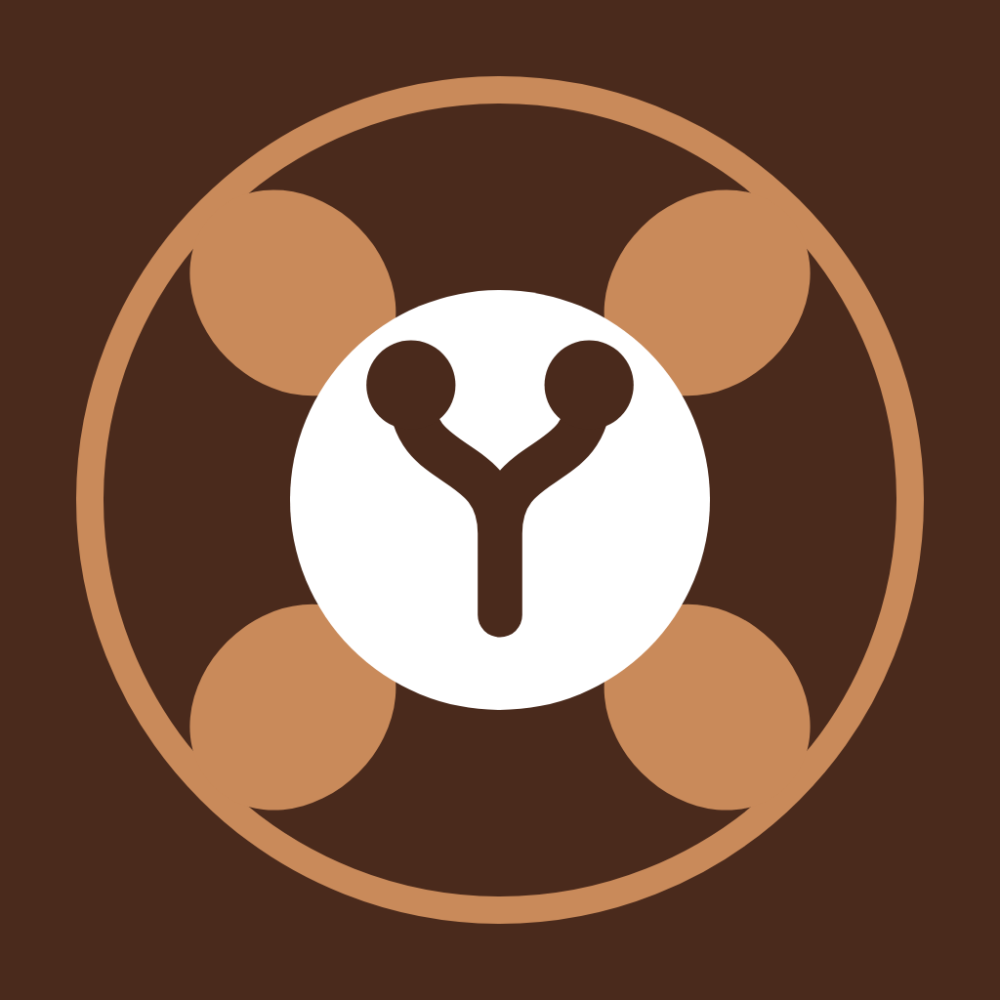
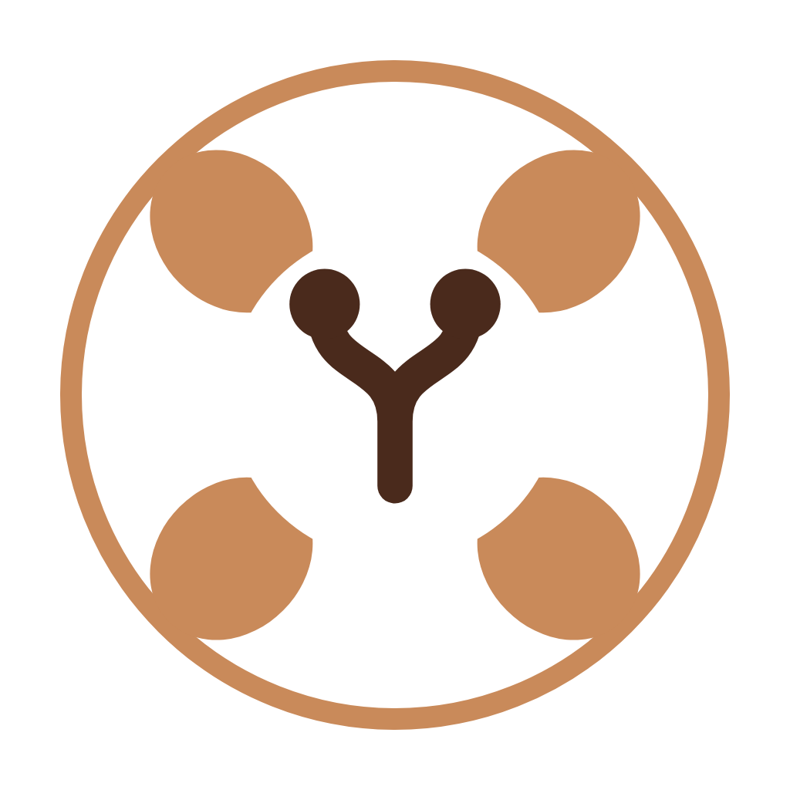
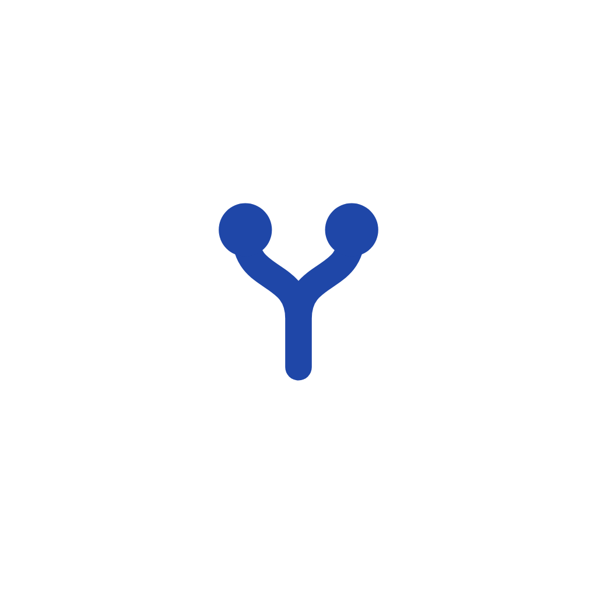

Los cuatro íconos
Los PNG de assets/app-icons/, mostrados a 220 (archivo de 1024) y a 60 (archivo de 180). Fondo de su color, la rueda de su región, la yunta en el centro, sin palabras.
Tienda: achiote, pétalos

Vendedores: cacao, cuatro hojas
Repartidores: añil, flechas en el aro
Bodega: arena, cuadros, filete de tinta abajo
A 60 px, uno al lado del otro
A 48 px (Android, el tamaño más chico)
Ícono adaptable de Android en máscara redonda
Fondo y frente por separado (432 × 432, 108 dp a 4x). El aro y la yunta van al 68 %: el punto más lejano queda al 57,9 % del lienzo, dentro del círculo seguro (61,1 %). El fondo se configura como un color en la app; el PNG de fondo solo lo muestra.
Ícono temático de Android 13 y pantalla de inicio
El temático es de un solo color sobre transparencia (el sistema lo tiñe). La pantalla de inicio muestra la rueda sin el cuadro, sobre el color de la página; la de bodega tiene su versión para el modo oscuro.


Consola (solo navegador)
Archivos: icono-*-1024.png (App Store, sin canal alfa), -512 (Google Play), -180 (iPhone), -48 (Android y favicon de la exportación web), -adaptativo-fondo-432, -adaptativo-frente-432, -monocromo-432, -inicio-1024 (y -inicio-oscuro-1024 de bodega); icono-central-512, -180, -48. Revisados por src/checkpng.py (assets/png-check.txt).